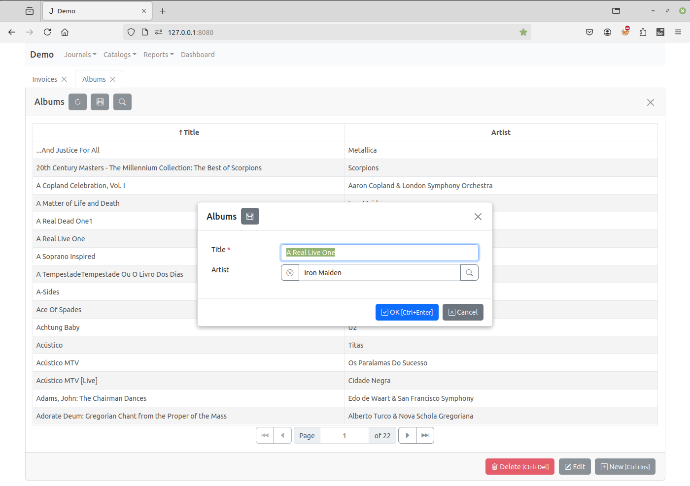
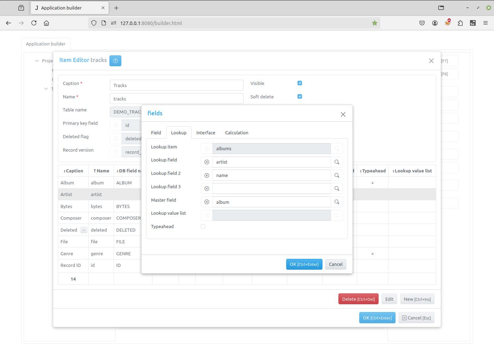
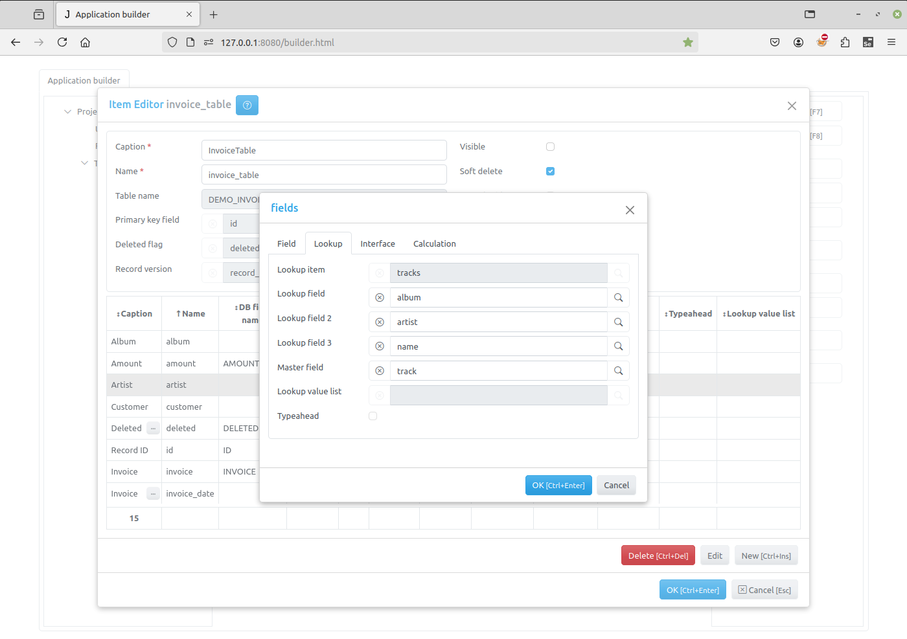
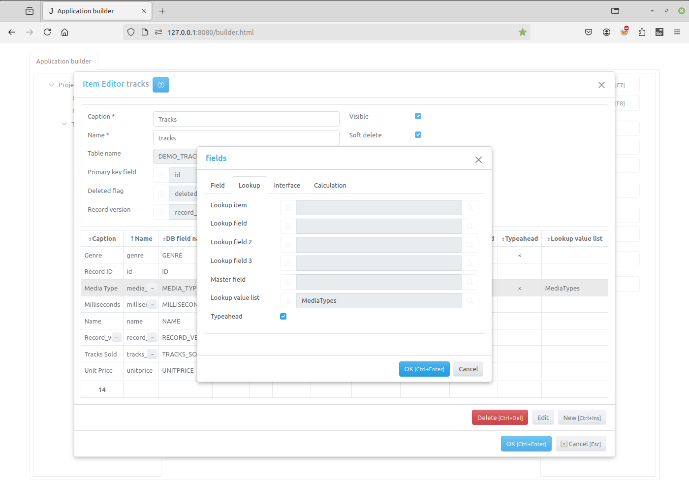

Lookup fields¶
A lookup field can display a user friendly value that is bound to another value in the another table or value list. For example, the lookup field can display a customer name that is bound to a respective customer ID number in another item’s table or list.
When entering a value in the lookup field the user chooses from a list of values. This can make data entry quicker and more accurate.
The two types of lookup fields that you can create are a lookup field, based on lookup item, and a value list.
Lookup item based lookup field¶
In the framework you can add a field to an item to look up information in another item’s table. For example in the Demo application Albums catalog there is the Artist lookup field.
To set the value of the field the user must click on the button to the right of the field input and select a record from the ‘’Artists’’ catalog that will appear. Then the value of this field will be the id of the record. The other way to set value of the field is to use typeahead, if Typeahead flag is set in the Field Editor Dialog:
For such fields Lookup item and Lookup field must be specified in the Field Editor Dialog:
The SQL query that is generated on the server, when the open method is called
and expanded parameter is set to true (default), uses JOIN clause to
get lookup values for such fields. Thus each such field has a pair of values:
the first value stores a reference to a record in the lookup item table (the value
of its primary key field), and the second value have the value of the lookup
field in this record.
To get access to this values use the following properties of lookup fields:
Client |
Server |
Description |
|---|---|---|
A value, that is stored in the item table, that is a reference to a record in the lookup item table. |
||
A value of the lookup field in the lookup item table. |
Sometimes there is a need to have two or more values from the same record in the
lookup item table. For example, the “”Invoices” journal in Demo has several
lookup fields (“Customer”, “Billing Address”, “Billing City”, and so on)
that have information about a customer, all stored in one record in the
“Customers” item table, describing that customer. In order to avoid creating
unnecessary fields in the “Invoices” item table, storing the same reference
to a record, and creating JOIN s for each such field, all lookup fields
except “Customers” have Master field value pointing to the “Customers”
field. These fields don’t have corresponding fields in the items’ underlying
database table. Their value property is always equal to the value property of
the master field and the SQL query that is generated on the server, when the
open method is called, uses one JOIN clause for all this fields.
When user clicks on the button to the right of the field input or uses typeahead, the application creates a copy of the lookup item of the field, sets its lookup_field attribute to the field. and triggers on_field_select_value event. Write this event handler to specify fields that will be displayed, set up filters for the lookup item, before it will be opened and displayed for a user to select a value for the field.
The lookup field in the lookup item can also be a lookup field, for example:
To set up such a field use Lookup field 2 and Lookup field 3 attributes.
Value list¶
Sometimes a source of a lookup field can be defined as a value list. For example, a MediaType field in the Tracks catalog of the Demo project has a Lookup value list attribute set to the MediaTypes lookup list:
Use the Lookup List Dialog of the task to define such lookup lists.